정보처리기사(구) (2012-05-20 기출문제)
1과목: 데이터 베이스
1. 다음 자료에 대하여 삽입(insertion) 정렬 기법을 사용하여 오름차순으로 정렬하고자 한다. 1회전 후의 결과는?
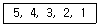
- 4, 3, 2, 1, 5
- 3, 4, 5, 2, 1
- 4, 5, 3, 2, 1
- 1, 2, 3, 4, 5
(정답률: 74%)

2. 데이터 모델의 구성 요소 중 데이터베이스에 표현된 개체 인스턴스를 처리하는 작업에 대한 명세로서 데이터베이스를 조작하는 기본 도구에 해당하는 것은?
- Operation
- Constraint
- Structure
- Relationship
(정답률: 71%)
3. 데이터베이스의 특성으로 옳은 내용 모두를 선택한 것은?
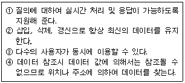
- ①, ②
- ①, ②, ③
- ②, ③, ④
- ①, ②, ③, ④
(정답률: 79%)
4. 제 3정규형에서 보이스코드 정규형(BCNF)으로 정규화 하기 위한 작업은?
- 원자 값이 아닌 도메인을 분해
- 부분 함수 종속 제거
- 이행 함수 종속 제거
- 결정자가 후보 키가 아닌 함수 종속 제거
(정답률: 76%)
5. 정규화의 목적으로 옳지 않은 것은?
- 어떠한 릴레이션이라도 데이터베이스 내에서 표현 가능하게 만든다.
- 데이터 삽입시 릴레이션을 재구성할 필요성을 줄인다.
- 중복을 배제하여 삽입, 삭제, 갱신 이상의 발생을 야기한다.
- 효과적인 검색 알고리즘을 생성할 수 있다.
(정답률: 81%)
6. 스택(Stack)의 응용 분야로 거리가 먼 것은?
- 인터럽트 처리
- 수식 계산 및 수식 표기법
- 운영체제의 작업 스케줄링
- 서브루틴의 복귀번지 저장
(정답률: 64%)
7. “트랜잭션의 연산은 데이터베이스에 모두 반영되든지 아니면 전혀 반영되지 않아야 한다.” 는 트랜잭션의 특성은?
- Consistency
- Isolation
- Atomicity
- Durability
(정답률: 72%)
8. 릴레이션의 특징으로 옳은 내용을 모두 선택한 것은?
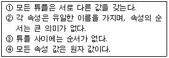
- ①, ②, ③, ④
- ①, ②, ③
- ②, ④
- ①, ③, ④
(정답률: 80%)
9. 데이터베이스의 설계의 논리적 설계 단계에서 수행하는 작업이 아닌 것은?
- 논리적 데이터 모델로 변환
- 트랜잭션 인터페이스 설계
- 스키마의 평가 및 정제
- 트랜잭션 모델링
(정답률: 40%)
10. 일련의 연산 집합으로 데이터베이스의 상태를 변환시키기 위하여 논리적 기능을 수행하는 하나의 작업 단위를 무엇이라고 하는가?
- 도메인
- 트랜잭션
- 모듈
- 프로시저
(정답률: 81%)
11. 병행제어 기법 중 로킹(Locking) 기법에 대한 설명으로 옳지 않은 것은?
- 로킹의 대상이 되는 객체의 크기를 로킹 단위라고 한다.
- 로킹 단위가 작아지면 병행성 수준이 높아진다.
- 로킹 단위가 커지면 로킹 오버헤드가 증가한다.
- 데이터베이스도 로킹 단위가 될 수 있다.
(정답률: 80%)
12. 다음 트리를 Preorder 운행법으로 운행할 경우 네 번째로 탐색되는 것은?
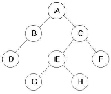
- B
- C
- E
- F
(정답률: 74%)
13. 자료 구조의 성격이 나머지 셋과 다른 하나는?
- 큐(Queue)
- 그래프(Graph)
- 데크(Deque)
- 리스트(List)
(정답률: 76%)
14. 관계해석에 대한 설명으로 옳지 않은 것은?
- 수학의 프레디킷 해석에 기반을 두고 있다.
- 관계 데이터 모델의 제안자인 코드(Codd)가 관계 데이터베이스에 적용할 수 있도록 설계하여 제안하였다.
- 튜플 관계해석과 도메인 관계해석이 있다.
- 원하는 정보와 그 정보를 어떻게 유도하는가를 기술하는 절차적 특성을 가진다.
(정답률: 71%)
15. 3계층 스키마 중 개념(Conceptual) 스키마에 대한 설명으로 옳은 내용 모두를 선택한 것은?
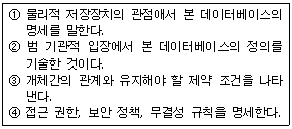
- ②, ③
- ①, ②, ③
- ②, ③, ④
- ①, ②, ③, ④
(정답률: 59%)
16. Which is the design step of database correctly?
- Requirement Formulation - Conceptual Schema - Physical Schema-Logical Schema
- Logical Schema - Requirement Formulation - Conceptual Schema - Physical Schema
- Requirement Formulation - Conceptual Schema - Logical Schema - Physical Schema
- Logical Schema - Requirement Formulation - Physical Schema - Conceptual Schema
(정답률: 80%)
17. 데이터베이스 설계시 고려 사항으로 적합하지 않은 것은?
- 데이터 무결성 유지
- 데이터 일관성 유지
- 데이터 보안성 유지
- 데이터 종속성 유지
(정답률: 68%)
18. 뷰(View)에 대한 설명으로 옳은 내용으로만 나열된 것은?
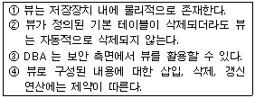
- ①, ②, ③, ④
- ①, ③, ④
- ②, ④
- ③, ④
(정답률: 71%)
19. 시스템 카탈로그에 대한 설명으로 틀린 것은?
- 데이터베이스에 포함된 다양한 데이터 객체에 대한 정보들을 유지, 관리하기 위한 시스템 데이터베이스이다.
- 시스템 카탈로그를 데이터 사전(Data Dictionary)이라고도 한다.
- 시스템 카탈로그를 데이터 정보를 메타 데이터라고도 한다.
- 시스템 카탈로그는 시스템을 위한 정보를 포함하는 시스템 데이터베이스이므로 일반 사용자는 내용을 검색할 수 없다.
(정답률: 83%)
20. What is the quantity of tuples in consist of the relation?
- Degree
- Instance
- Domain
- Cardinality
(정답률: 72%)
2과목: 전자 계산기 구조
21. 프로그램에 의해 제어되는 동작이 아닌 것은?
- input/output
- branch
- status sense
- RNI(fetch)
(정답률: 42%)
22. 두 데이터를 비교하는 연산(compare)과 같은 동작을 하는 논리연산은?
- EX-OR 연산
- AND 연산
- OR 연산
- NOT 연산
(정답률: 66%)
23. 명령어 사이클에 대한 설명 중 옳지 않은 것은?
- 간접 사이클은 피연산 데이터가 있는 기억장치의 유효주소를 계산하는 과정이다.
- 인터럽트 사이클은 요청된 서비스 프로그램을 수행하여 완료할 때까지의 과정이다.
- 실행 사이클은 연산자 코드의 내용에 따라 연산을 수행하는 과정이다.
- 패치 사이클은 주기억장치로부터 명령어를 꺼내어 디코딩하는 과정이다.
(정답률: 50%)
24. CPU와 주기억장치 사이의 속도차이로 인해서 발생하는 문제를 해결하기 위해 주기억장치를 모듈별로 주소를 배정한 후 각 모듈을 번갈아 가면서 접근하는 방식은?
- Virtual Memory
- Cache Memory
- Interleaving
- Serial Processing
(정답률: 57%)
25. 반가산기 회로의 carry(C)와 sum(S)을 나타내는 논리식은?
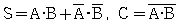
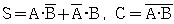
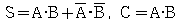
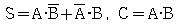
(정답률: 61%)
26. A=1, B=1, C=0, D=1일 때 논리연산
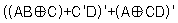
의 결과값과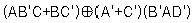
의 결과값을 순서대로 옳게 나열한 것은?- 0, 0
- 0, 1
- 1, 0
- 1, 1
(정답률: 46%)
27. 프로세서가 수행될 때 나타나는 지역성을 응용해서 접근 속도를 빠르게 하는 캐시 메모리에서 변화된 캐시의 내용을 주기억장치에 기록하는 방법이 아닌 것은?
- write-through
- write-back
- write-once
- write-all
(정답률: 43%)
28. 제어장치의 기능에 대한 설명으로 옳지 않은 것은?
- 입력장치의 내용을 기억장치에 기록한다.
- 기억장치의 내용을 연산장치에 옮긴다.
- 가상메모리에 있는 프로그램을 해독한다.
- 기억장치의 내용을 출력장치에 옮긴다.
(정답률: 68%)
29. 불 함수 F=A+B'C를 최소항의 합으로 바르게 표시한 것은?
- F(A, B, C) = Σ(1, 4, 5, 6, 7)
- F(A, B, C) = Σ(1, 2, 3, 6, 7)
- F(A, B, C) = Σ(1, 3, 5, 6, 7)
- F(A, B, C) = Σ(1, 2, 4, 6, 7)
(정답률: 43%)
30. 마이크로프로그램을 이용하는 제어장치의 구성요소가 아닌 것은?
- 순서 제어 모듈
- 서브루틴 레지스터
- 명령 레지스터
- 제어버퍼 레지스터
(정답률: 30%)
31. 캐시기억장치에서 적중률이 낮아질 수 있는 매핑 방법은?
- 연관 매핑
- 세트-연관 매핑
- 간접 매핑
- 직접 매핑
(정답률: 50%)
32. 인스트럭션 세트의 효율성을 높이기 위하여 고려할 사항이 아닌 것은?
- 기억 공간
- 레지스터의 종류
- 사용빈도
- 주소지정 방식
(정답률: 47%)
33. (390)16 번지의 내용이 2010일 때 다음 그림이 나타내는 것은?
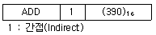
- 390과 2010을 더한다.
- 2010번지의 내용과 누산기의 값을 더한다.
- 2010을 누산기의 값과 더한다.
- 390번지의 내용과 누산기의 값을 더한다.
(정답률: 46%)
34. 기억장치에 대한 접근을 시작하고 종료한 후에, 다시 해당 기억장치를 접근할 때까지의 소요시간은?
- 탐색 시간(seek time)
- 전송 시간(transfer time)
- 접근 시간(access time)
- 사이클 시간(cycle time)
(정답률: 52%)
35. 다중처리기에 대한 설명으로 틀린 것은?
- 다중처리기는 강 결합 시스템으로 2개 이상의 프로세서를 포함한다.
- 다중처리기는 기억장치와 입출력 채널, 주변장치들을 공유한다.
- 다중처리기는 다수의 복합 운영체제에 의해 제어된다.
- 프로세서들 간의 통신은 공유 기억장치를 통해서 이루어진다.
(정답률: 62%)
36. 수직적 마이크로명령어에 대한 설명으로 틀린 것은?
- 마이크로명령어의 비트 수가 감소된다.
- 제어 기억장치의 용량을 줄일 수 있다.
- 마이크로명령어의 코드화된 비트들을 해독하기 위한 지연이 발생한다.
- 마이크로명령어의 각 비트가 각 제어신호에 대응되도록 하는 방식이다.
(정답률: 35%)
37. 다음 중 DMA에 대한 설명으로 옳지 않은 것은?
- DMA는 Direct Memory Access의 약자이다.
- DMA는 기억장치와 주변장치 사이의 직접적인 데이터 전송을 제공한다.
- DMA는 블록으로 대용량의 데이터를 전송할 수 있다.
- DMA는 입출력 전송에 따른 CPU의 부하를 증가시킬 수 있다.
(정답률: 64%)
38. 병렬처리컴퓨터의 특징으로 틀린 것은?
- 일부 하드웨어 오류가 발생하더라도 전체 시스템은 동작할 수 있다.
- 처리기(processor)를 N개 사용하면 처리속도가 정확히 N배 빨라진다.
- 프로그램작성이 어려워진다.
- 기억장치를 공유할 수 있다.
(정답률: 65%)
39. 명령어의 구성 형태 중 하나의 오퍼랜드만 포함하고 다른 오퍼랜드나 결과값은 누산기에 저장되는 명령어 형식은?
- 0-주소 명령어
- 1-주소 명령어
- 2-주소 명령어
- 3-주소 명령어
(정답률: 71%)
40. 버스 중재에 있어서 소프트웨어 폴링 방식에 대한 설명으로 틀린 것은?
- 비교적 큰 정보를 교환하는 시스템에 적합하다.
- 융통성이 있다.
- 반응속도가 느리다.
- 우선순위를 변경하기 어렵다.
(정답률: 52%)
3과목: 운영체제
41. 페이징 기법 하에서 페이지 크기에 관한 사항으로 옳지 않은 것은?
- 페이지 크기가 작을수록 페이지 테이블 크기가 커지게 된다.
- 페이지 크기가 작을수록 좀 더 알찬 워킹 셋을 유지할 수 있다.
- 페이지 크기가 클수록 실제 프로그램 수행과 무관한 내용이 포함될 수 있다.
- 페이지 크기가 클수록 디스크 입, 출력이 비효율적이다.
(정답률: 40%)
42. 4개의 패이지를 수용할 수 있는 주기억장치가 있으며, 초기에는 모두 비어 있다고 가정한다. 다음의 순서로 페이지 참고자 발생할 때 LRU 페이지 교체 알고리즘을 사용할 경우 몇 번의 페이지 결함이 발생하는가?
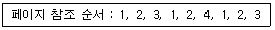
- 3회
- 4회
- 5회
- 6회
(정답률: 55%)
43. 다중 처리기 구조 중 강결합 시스템에 대한 설명으로 옳지 않은 것은?
- 프로세서 간 통신은 공유 메모리를 통하여 이루어진다.
- 각 시스템은 자신만의 독자적인 운영체제와 주기억장치를 가진다.
- 다중 처리 시스템이라고도 한다.
- 공유 메모리를 차지하려는 프로세서간의 경쟁을 최소화해야 한다.
(정답률: 64%)
44. 준비상태 큐에 프로세서 A, B, C 가 차례로 도착하였다. 라운드로빈(Round Robin)으로 스케줄링할 때 타임 슬라이스를 4초로 한다면 평균 반환 시간은?
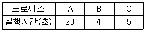
- 16
- 17
- 18
- 19
(정답률: 45%)
45. 스레드(Thread)에 관한 설명으로 옳지 않은 것은?
- 스레드는 하나의 프로세스 내에서 병행성을 증대시키기 위한 메커니즘이다.
- 스레드는 프로세스의 일부 특성을 갖고 있기 때문에 경량(light weight) 프로세서라고도 한다.
- 스레드는 동일 프로세스 환경에서 서로 독립적인 다중 수행이 불가능하다.
- 스레드 기반 시스템에서 스레드는 독립적인 스케줄링의 최소 단위로서 프로세스의 역할을 담당한다.
(정답률: 73%)
46. 로더의 종류 중 별도의 로더 없이 언어번역 프로그램이 로더의 기능까지 수행하는 방식은?
- Absolute Loader
- Direct Linking Loader
- Dynamic Loader
- Compile and Go Loader
(정답률: 60%)
47. SSTF 방식을 사용할 경우 현재 헤드의 위치는 60 이며, 트랙 바깥 쪽 방향으로 진행 중이다. 디스크 대기 큐에 다음과 같은 순서(왼쪽부터 먼저 도착한 순서임)의 액세스 요청이 대기 중일 때 가장 먼저 실행되는 것은? (단, 가장 안쪽 방향의 트랙 번호는 0 이다.)
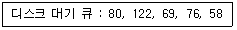
- 58
- 76
- 69
- 80
(정답률: 56%)
48. 보안의 메커니즘 중 데이터를 송수신한 자가 송수신 사실을 부인할 수 없도록 송수신 증거를 제공하는 것은?
- 인증
- 암호화
- 부인 방지
- 위험 탐지
(정답률: 71%)
49. 분산 운영체제의 구조 중 다음 설명에 해당하는 구조는?
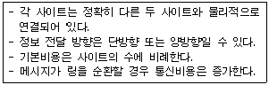
- Ring Connection
- Hierarchy Connection
- Star Connection
- Partially Connection
(정답률: 71%)
50. UNIX에서 사용자 정보를 표시하는 명령어는?
- ls
- finger
- cat
- mkfs
(정답률: 48%)
51. 비행기 제어, 교통 제어, 레이더 추적 등 정해진 시간에 반드시 수행되어야 하는 작업들이 존재할 때, 가장 적합한 처리방식은?
- Batch processing system
- Time-sharing system
- Real-time processing system
- Distributed processing system
(정답률: 70%)
52. 스래싱(thrashing)에 관한 설명으로 가장 거리가 먼 것은?
- 스래싱이 발생하면 CPU가 제 기능을 발휘하지 못한다.
- 프로세스가 프로그램 수행에 소요되는 시간보다 페이지 교환에 소요되는 시간이 더 큰 경우를 의미한다.
- 스래싱을 방지하기 위해서는 멀티프로그래밍의 정도(degree)를 높여야 한다.
- 프로세스들이 워킹 셋을 확보하지 못한 결과이다.
(정답률: 63%)
53. 운영체제의 목적으로 거리가 먼 것은?
- 응답시간 증가
- 사용자 인터페이스 제공
- 주변장치 관리
- 신뢰성 향상
(정답률: 75%)
54. 컴퓨터 시스템에서 사용되는 자원들(파일, 프로세스, 메모리 등)에 대하여 불법적인 접근방지와 손상 발생 방지를 목적으로 하는 자원보호 방법의 일반적인 기법이 아닌 것은?
- 접근 제어 리스트(Access control list)
- 접근 제어 행렬(Access control matrix)
- 권한 리스트(Capability list)
- 권한 제어 행렬(Capability control matrix)
(정답률: 46%)
55. 분산시스템의 투명성(transparency)에 관한 설명으로 옳지 않은 것은?
- 위치(location) 투명성은 하드웨어와 소프트웨어의 물리적 위치를 사용자가 알 필요가 없다.
- 이주(migration) 투명성은 자원들이 한 곳에서 다른 곳으로 이동하면 자원들의 이름도 자동으로 바꾸어진다.
- 복제(replication) 투명성은 사용자에게 통지할 필요 없이 시스템 안에 파일들과 자원들의 부가적인 복사를 자유로이 할 수 있다.
- 병행(concurrency) 투명성은 다중 사용자들이 자원들을 자동으로 공유할 수 있다.
(정답률: 48%)
56. PCB(PROCESS CONTROL BLOCK)가 포함하고 있는 정보가 아닌 것은?
- 프로세스의 현 상태
- 중앙처리장치 레지스터 보관 장소
- 할당된 자원에 대한 포인터
- 프로세스의 사용 빈도
(정답률: 46%)
57. 파일 디스크립터에 포함되는 내용이 아닌 것은?
- 파일의 내용
- 파일의 구조
- 보조기억장치의 유형
- 생성날짜
(정답률: 30%)
58. 공간 구역성(Spatial locality)과 밀접한 관계가 있는 것은?
- 스택(stack)
- 순환(looping)
- 배열 순례(array traversal)
- 부 프로그램(subprogram)
(정답률: 55%)
59. UNIX의 특징으로 옳지 않은 것은?
- 다양한 유틸리티 프로그램들이 존재한다.
- 이식성이 높다.
- 많은 네트워킹 기능을 제공하므로 통신망 관리용으로 적합하다.
- 비순환 그래프 디렉토리 구조의 파일 시스템을 갖는다.
(정답률: 72%)
60. UNIX에서 프로세스 관리, 기억장치 관리, 파일 관리, 입출력 관리, 프로세스간 통신, 데이터 전송 및 변환 등의 기능을 수행하는 것은?
- C Shell
- Utility Program
- Kernel
- Korn Shell
(정답률: 75%)
4과목: 소프트웨어 공학
61. 프로토타이핑 모형에 대한 설명으로 옳지 않은 것은?
- 프로토타이핑 모형은 발주자나 개발자 모두에게 공동의 참조모델을 제공한다.
- 사용자의 요구사항을 충실히 반영할 수 있다.
- 최종 결과물이 만들어지는 소프트웨어 개발 완료 시점에 최초로 오류 발견이 가능하다.
- 프로토타이핑 모형은 소프트웨어 생명주기에서 유지보수가 없어지고 개발 단계 안에서 유지보수가 이루어지는 것으로 볼 수 있다.
(정답률: 63%)
62. 소프트웨어 프로젝트 관리를 효과적으로 수행하는데 필요한 3P에 해당하지 않는 것은?
- People
- Problem
- Process
- Possibility
(정답률: 76%)
63. 객체지향 기법에 대한 설명으로 거리가 먼 것은?
- 프로시저에 근간을 두고 프로그래밍을 구현하는 기법이다.
- 현실 세계를 모형화하여 사용자와 개발자가 쉽게 이해 할 수 있다.
- 소프트웨어의 재사용율이 높아진다.
- 소프트웨어의 유지보수성이 향상된다.
(정답률: 53%)
64. 프로젝트 계획 수립시 소프트웨어 범위(Scope) 결정의 주요 요소로 거리가 먼 것은?
- 소프트웨어 개발 환경
- 소프트웨어 성능
- 소프트웨어 제약조건
- 소프트웨어 신뢰도
(정답률: 57%)
65. 화이트 박스 테스트 기법으로만 짝지어진 것은?
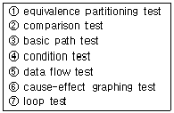
- ①, ②, ⑦
- ②, ③, ④, ⑥, ⑦
- ①, ②, ⑥
- ③, ④, ⑤, ⑦
(정답률: 63%)
66. 소프트웨어 품질 목표 중 소프트웨어를 다른 환경으로 이식할 경우에도 운용 가능하도록 쉽게 수정될 수 있는 시스템 능력을 의미하는 것은?
- Portability
- Functionality
- Usability
- Efficiency
(정답률: 63%)
67. 유지보수의 종류 중 소프트웨어 재공학과 가장 관계되는 것은?
- Adaptive maintenance
- Perfective maintenance
- Preventive maintenance
- Corrective maintenance
(정답률: 43%)
68. 자료사전(Data Dictionary)에 사용되는 기호의 의미를 옳게 나열한 것은?
- { } : 자료의 생략 가능, ( ) : 자료의 선택
- ( ) : 자료의 설명, ** : 자료의 선택
- = : 자료의 설명, ** : 자료의 정의
- + : 자료의 연결, ( ) : 자료의 생략 가능
(정답률: 70%)
69. 소프트웨어 재공학 활동 중 기존 소프트웨어의 명세서를 확인하고 소프트웨어의 동작을 이해하고 재공학 대상을 선정하는 것은?
- 분석(analysis)
- 재구성(restructuring)
- 역공학(reveres engineering)
- 이식(migration)
(정답률: 59%)
70. 객체 지향 기법에서 다음 설명에 해당하는 것으로 가장 타당한 것은?
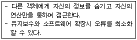
- Abstraction
- information Hiding
- Inheritance
- Polymorphism
(정답률: 65%)
71. 다음 중 소프트웨어 위기 발생 요인과 거리가 먼 것은?
- 소프트웨어 규모의 증대와 복잡도에 따른 개발 비용 증가
- 소프트웨어 개발 정체 현상
- 소프트웨어 품질의 고급화
- 신기술에 대한 교육과 훈련의 부족
(정답률: 63%)
72. 소프트웨어공학에 대한 설명으로 거리가 먼 것은?
- 소프트웨어공학은 신뢰성 있는 소프트웨어를 경제적인 비용으로 획득하기 위해 공학적 원리를 정립하고 이를 이용하는 학문이다.
- 소프트웨어공학은 소프트웨어 제품의 품질을 향상시키고 소프트웨어 생산성과 작업 만족도를 증대시키는 것이 목적이다.
- 소프트웨어공학이란 소프트웨어의 개발, 운용, 유지보수 및 파기에 대한 체계적인 접근 방법이다.
- 소프트웨어공학의 궁극적 목표는 최대의 비용으로 계획된 일정보다 가능한 빠른 시일 내에 소프트웨어를 개발하는 것이다.
(정답률: 76%)
73. CASE에 대한 설명으로 옳지 않은 것은?
- 소프트웨어의 유지보수를 간편하게 수행할 수 있다.
- 자동 검사를 통하여 소프트웨어 품질을 향상시킨다.
- 소프트웨어 부품의 재사용성이 향상된다.
- 보헴이 제안한 것으로 LOC에 의한 비용 산정 기법이다.
(정답률: 65%)
74. 럼바우의 객체지향 분석에서 사용되는 분석 활동과 관계되는 것은?
- 객체 모델, 동적 모델, 정적 모델
- 객체 모델, 동적 모델, 기능 모델
- 동적 모델, 기능 모델, 정적 모델
- 정적 모델, 객체 모델, 기능 모델
(정답률: 73%)
75. 다음 설명의 ( ) 내용으로 옳은 것은?
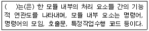
- Validation
- Coupling
- Interface
- Cohesion
(정답률: 57%)
76. 소프트웨어의 재사용(reusability)에 대한 효과와 거리가 먼 것은?
- 사용자의 책임과 권한부여
- 소프트웨어의 품질향상
- 생산성 향상
- 구축 방법에 대한 지식의 공유
(정답률: 70%)
77. 시스템에서 모듈 사이의 결합도(Coupling)에 대한 설명으로 옳은 것은?
- 모듈간의 결합도를 약하게 하면 모듈 독립성이 향상된다.
- 한 모듈 내에 있는 처리요소들 사이의 기능적인 연관정도를 나타낸다.
- 결합도가 높으면 시스템 구현 및 유지보수 작업이 쉽다.
- 자료결합도는 내용결합도 보다 결합도가 높다.
(정답률: 54%)
78. 프로젝트를 추진하기 위하여 팀 구성원들의 특성을 분석해 보니 1명이 고급 프로그래머이고 몇 명의 중급 프로그래머가 포함되어 있었다. 이와 같은 경우 가장 적합한 팀 구성 방식은?
- 책임 프로그래머 팀(Chief Programmer Team)
- 민주주의식 팀(Democratic Team)
- 계층형 팀(Hierarchical Team)
- 구조적 팀(Structured Team)
(정답률: 72%)
79. FTR의 지침 사항으로 거리가 먼 것은?
- 회의 동안 의제를 유지시킨다.
- 문제 영역을 명확히 표현한다.
- 논쟁과 반박의 제한을 두지 않는다.
- 제품의 검토에 집중한다.
(정답률: 73%)
80. 프로젝트 일정 관리시 사용하는 간트(Gantt) 차트에 대한 설명으로 옳지 않은 것은?
- 막대로 표시하며, 수평 막대의 길이는 각 태스크의 기간을 나타낸다.
- 이정표, 기간, 작업, 프로젝트 일정을 나타낸다.
- 시간선(Time-line) 차트라고도 한다.
- 작업들 간의 상호 관련성, 결정경로를 표시한다.
(정답률: 60%)
5과목: 데이터 통신
81. IP(internet Protocol)의 설명 중 옳지 않은 것은?
- 비연결형 전송 서비스를 제공한다.
- 비신뢰성 전송 서비스를 제공한다.
- 데이터그램 이라는 데이터 전송형식을 갖는다.
- 스트림(stream) 전송 기능을 제공한다.
(정답률: 40%)
82. 불균형적인 멀티포인트 링크 구성 중 주 스테이션이 각 부 스테이션에게 데이터 전송을 요청하는 회선 제어 방식은?
- Contention 방식
- Polling 방식
- Select-Hold 방식
- Point to Point 방식
(정답률: 59%)
83. 다음이 설명하고 있는 데이터 교환 방식은?
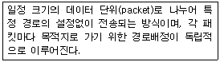
- 메시지 교환 방식
- 공간분할 교환방식
- 가상회선 방식
- 데이터그램 방식
(정답률: 49%)
84. OSI 7계층 중 데이터 링크 계층의 프로토콜에 해당하지 않는 것은?
- HDLC
- HTTP
- PPP
- LLC
(정답률: 63%)
85. 다음이 설명하고 있는 프로토콜은?
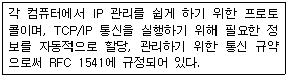
- LDP
- DHCP
- ARP
- RTCP
(정답률: 50%)
86. 다음이 설명하고 있는 것은?
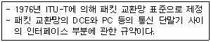
- X. 21
- X. 28
- X. 25
- X. 29
(정답률: 74%)
87. 패킷(packet) 교환과 관계가 없는 것은?
- 패킷 단위로 데이터 전송
- 고정적인 전송 대역폭
- 가상회선 방식
- 데이터그램 방식
(정답률: 53%)
88. Go-Back-N ARQ와 Selective Repeat ARQ에 대한 설명으로 옳지 않은 것은?
- Go-Back-N ARQ는 오류 발생 이후의 모든 프레임을 재요청 한다.
- Selective Repeat ARQ는 버퍼의 사용량이 상대적으로 크다.
- Go-Back-N ARQ는 프레임의 송신 순서와 수신 순서가 동일해야 수신이 가능하다.
- Selective Repeat ARQ는 여러 개의 프레임을 묶어서 수신 확인을 한다.
(정답률: 42%)
89. LAN의 매체 접근 제어 방식인 CSMA/CD에 대한 설명으로 옳지 않은 것은?
- 버스 또는 트리 토플로지에서 가장 많이 사용되는 매체 접근 제어 방식이다.
- 각 호스트들이 전송매체에 경쟁적으로 데이터를 전송하는 방식이다.
- 토큰 패싱 방식에 비해 구현이 복잡하다.
- 프레임을 전송하면서 충돌여부를 조사한다.
(정답률: 50%)
90. X.25 프로토콜을 구성하는 계층에 해당하지 않는 것은?
- 물리계층
- 링크계층
- 논리계층
- 패킷계층
(정답률: 59%)
91. 데이터 통신 회선의 이용방식에 의한 분류에 포함되지 않는 것은?
- simplex communication
- half duplex communication
- full duplex communication
- multi access communication
(정답률: 59%)
92. 비동기식 전송에 대한 설명으로 옳지 않은 것은?
- 어떤 문자도 전송되지 않을 때는 통신회선은 예비(Reserve) 상태가 된다.
- 한 문자를 전송할 때마다 동기화시킨다.
- 각 비트 블록의 앞뒤에 시작과 정지비트를 덧붙여 전송한다.
- 일반적으로 패리티비트를 추가해서 전송한다.
(정답률: 44%)
93. 인터-네트워킹(Inter-Networking)을 위해 사용되는 네트워크 장비로 가장 거리가 먼 것은?
- 리피터(Repeater)
- 게이트웨이(Gateway)
- 라우터(Router)
- 증폭기(Amplifier)
(정답률: 64%)
94. HDLC(High-level Data Link Control) 정보 프레임의 용도 및 기능으로 가장 적합한 것은?
- 사용자 데이터 전달
- 흐름 제어
- 에러 제어
- 링크 제어
(정답률: 43%)
95. 디지털 데이터를 아날로그 신호로 변환시키는 방식이 아닌 것은?
- ASK
- FSK
- PSK
- QSK
(정답률: 62%)
96. 점대점 링크를 통하여 인터넷 접속에 사용되는 프로토콜인 PPP(Point to Point Protocol)에 대한 설명으로 옳지 않은 것은?
- 재전송을 통한 오류 복구와 흐름제어 기능을 제공한다.
- LCP와 NCP를 통하여 유용한 기능을 제공한다.
- IP 패킷의 캡슐화를 제공한다.
- 동기식과 비동기식 회선 모두를 지원한다.
(정답률: 34%)
97. B-ISDN/ATM 프로토콜에 있어서 ATM 계층의 기능은?
- 가변길이의 셀로 모든 정보 운반
- 셀 경계 식별
- 셀 헤더 생성 및 추출
- 비트 타이밍
(정답률: 50%)
98. 회선교환과 패킷교환에 대한 설명으로 옳은 것은?
- 회선교환은 실시간 전송이 이루어지지 않는다.
- 패킷교환은 데이터 속도와 코드변환이 불가능하다.
- 회선교환은 호 설정 이후 에러 제어 기능을 제공한다.
- 패킷교환은 저장-전달 방식을 사용한다.
(정답률: 46%)
99. Stop-and-wait ARQ 방식에서 수신측이 4번 프레임에 대해 NAK를 보내왔다. 이에 대한 송신측의 행위로 옳은 것은?
- 1, 2, 3, 4번 프레임을 재전송 한다.
- 현재의 윈도우 크기만큼을 모두 전송한 후 4번 프레임을 재전송 한다.
- 5번 프레임부터 모두 재전송 한다.
- 4번 프레임만 재전송 한다.
(정답률: 56%)
100. ARQ에서 오류 제어를 위해 수신한 데이터 프레임에 오류가 없음을 알리는 긍정 응답 메시지는?
- SOH
- ACK
- NAK
- EOT
(정답률: 68%)
1회전에서는 첫 번째 원소인 4가 이미 정렬된 상태이므로 그대로 둔다. 두 번째 원소인 5는 4보다 크므로 그대로 둔다. 세 번째 원소인 3은 4보다 작으므로 4와 자리를 바꾼다. 이제 배열은 [3, 5, 4, 2, 1]이 된다. 네 번째 원소인 2는 5보다 작으므로 5와 자리를 바꾼다. 이제 배열은 [3, 2, 4, 5, 1]이 된다. 마지막으로 다섯 번째 원소인 1은 5보다 작으므로 5와 자리를 바꾼다. 최종적으로 배열은 [3, 2, 4, 1, 5]가 된다. 따라서 정답은 "4, 5, 3, 2, 1"이다.